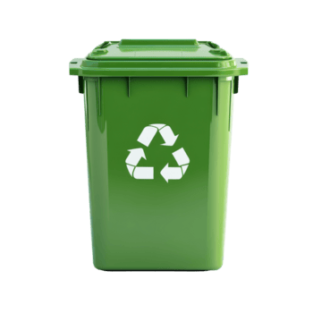
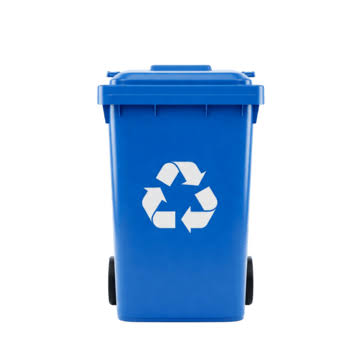
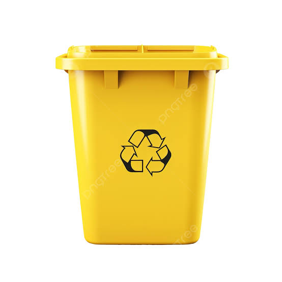
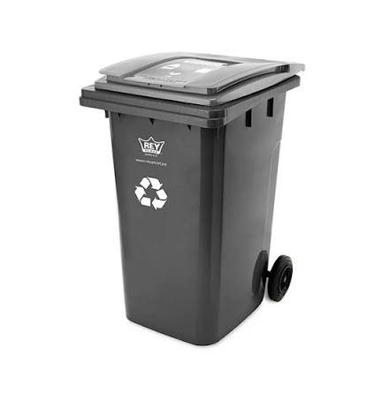
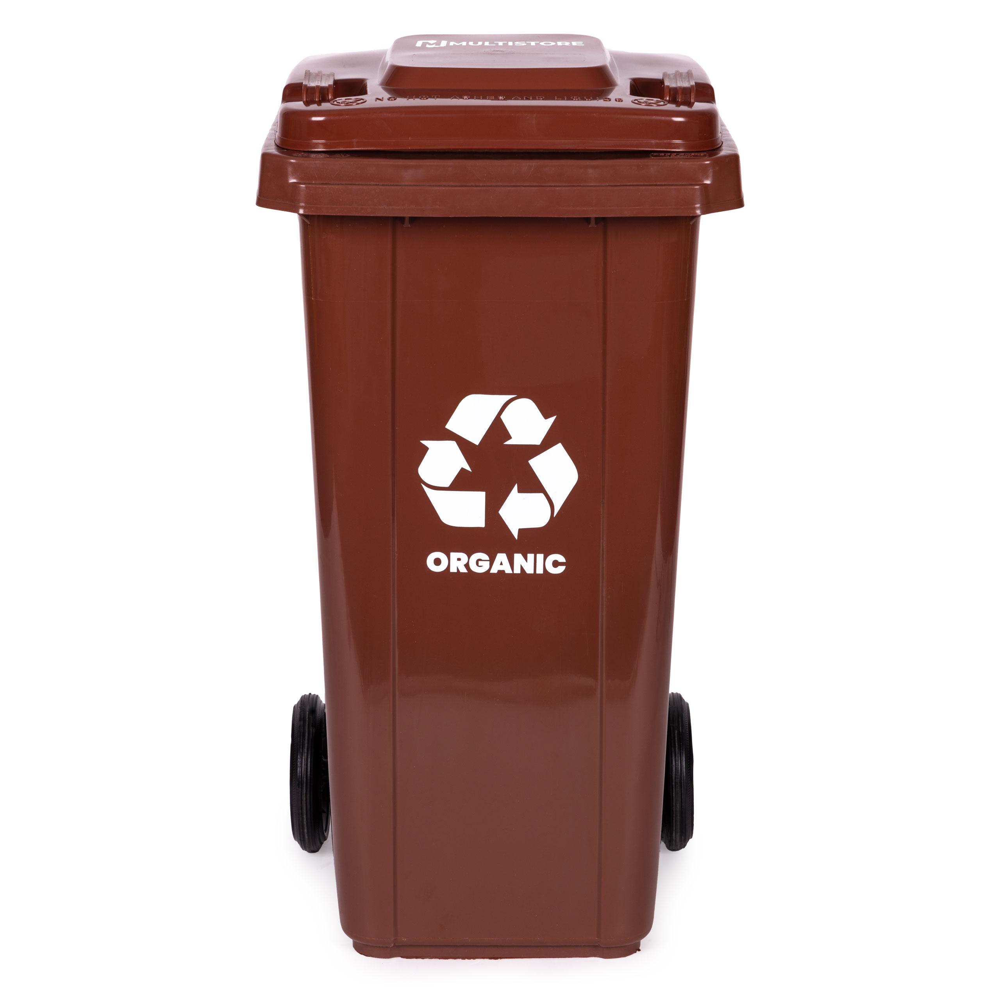
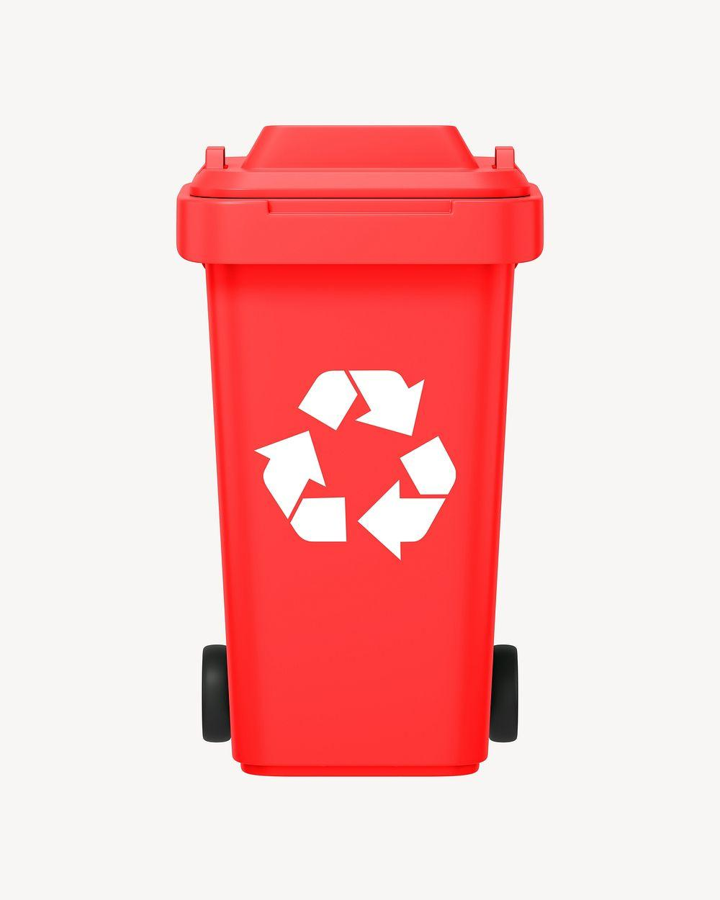
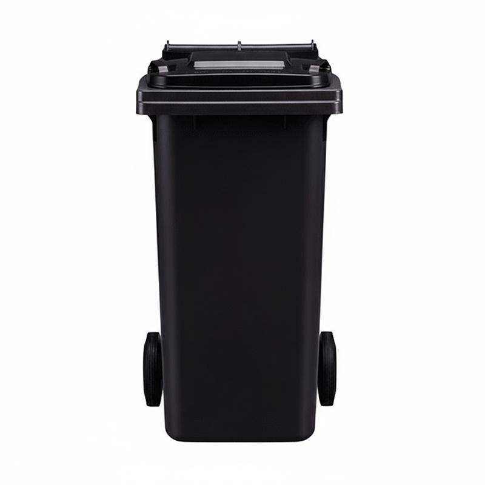

Bienvenido a EcoCity. Aquí aprenderás cómo separar correctamente los residuos y ayudar a cuidar el medio ambiente.
Conoce los diferentes tipos de tachos y descubre cómo utilizarlos correctamente.

En este tacho se depositan materiales limpios y secos que pueden reciclarse o reutilizarse, como envases, papel, cartón y latas. Se utiliza cuando no existen contenedores separados para cada material. Si los hay, los residuos deben clasificarse en sus tachos correspondientes.

En este tacho se depositan hojas de papel, periódicos, revistas, cuadernos usados y cajas de cartón limpias y secas. Estos materiales pueden reciclarse para fabricar nuevos productos de papel y cartón, reduciendo la cantidad de residuos.

En este tacho se depositan botellas de plástico, envases de bebidas, recipientes y otros plásticos reciclables, limpios y vacíos. Separarlos correctamente permite aprovecharlos para fabricar nuevos productos y reducir la contaminación.

En este tacho se depositan botellas y frascos de vidrio vacíos y limpios, como envases de bebidas y alimentos. El vidrio puede reciclarse para fabricar nuevos envases. No deben colocarse espejos, cerámicas ni otros materiales diferentes al vidrio de los envases.

En este tacho se depositan cáscaras de frutas, restos de verduras, hojas secas y otros residuos orgánicos biodegradables. Estos materiales pueden aprovecharse para elaborar compost, un abono natural que ayuda al crecimiento de las plantas.

En este tacho se depositan residuos que requieren un manejo especial, como pilas usadas, baterías y determinados envases contaminados con sustancias químicas. Deben separarse de los residuos comunes y entregarse a los puntos de recolección autorizados cuando corresponda, para evitar riesgos para la salud y el medio ambiente.

En este tacho se depositan residuos que no pueden reciclarse fácilmente, como papel higiénico usado, servilletas sucias, pañales desechables y otros materiales contaminados. Su correcta separación evita que se mezclen con residuos que sí pueden aprovecharse.
En EcoCity utilizamos una clasificación educativa por materiales para aprender a separar los residuos reciclables. Los colores mostrados son ilustrativos. En el Perú, la clasificación municipal oficial establece colores diferentes según la NTP 900.058:2019.
¿Sabes dónde colocar cada residuo? Participa en nuestro juego educativo y demuestra cuánto sabes sobre reciclaje.
Pregunta 1 de 12
⭐ Puntos: 0